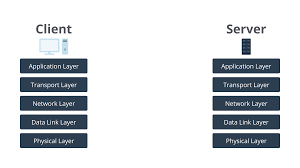
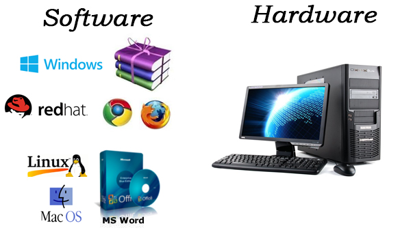

teknik jaringan komputer dan telekomunikasi
teknik jaringan komputer dan telekomunikasi
web page:
beranda
jelajahi lebih dalam
following us & help center
apa itu teknik jaringan komputer dan telekomunikasi?
teknik jaringan komputer dan telekomunikasi adalah keahlian di bidang teknologi dan informasi
yang berfokus pada keahlian di bidang jaringan network dan komputer secara teknis dan
bisa juga mempelajari pemograman
menurut wikipedia
Teknik Jaringan Komputer dan Telekomunikasi (disingkat TKJ) merupakan ilmu berbasis Teknologi Informasi dan Komunikasi
terkait kemampuan algoritma, dan pemrograman komputer, perakitan komputer, perakitan jaringan komputer, dan pengoperasian perangkat lunak, dan internet.
Teknik komputer, dan jaringan juga membutuhkan pemahaman di bidang teknik listrik,
dan ilmu komputer sehingga mampu mengembangkan, dan mengintegrasikan perangkat lunak, dan perangkat keras
apa yang dipelajari?
dalam bidang teknik jaringan komputer dan telekomunikasi mempelajari beberapa hal :
jaringan(networking)
Dalam bidang networking, penggunaan teknologi jaringan internet dan komputer memainkan peran penting dalam kehidupan sehari-hari.
Manfaat mempelajari jaringan internet dan komputer meliputi kemampuan untuk berkomunikasi dengan orang lain secara efektif,
mengakses informasi dan sumber daya secara luas, serta meningkatkan produktivitas dalam berbagai aspek kehidupan.
Dalam dunia kerja, pengetahuan tentang jaringan memungkinkan penggunaan aplikasi dan layanan yang lebih efektif,
serta meningkatkan kemampuan dalam berinteraksi dengan orang lain. Selain itu, teknologi jaringan juga memungkinkan penggunaan
yang memberikan akses ke berbagai sumber daya dan aplikasi secara online. Dengan demikian, mempelajari jaringan
dan penggunaan teknologi jaringan dalam kehidupan sehari-hari serta dalam dunia kerja sangat penting untuk meningkatkan efisiensi dan kemampuan dalam berbagai kehidupan.
aspek yang dipelajari dalam bidang jaringan(networking)
- topologi jaringan

- pengalamatan ip

- Protokol Jaringan

- Perangkat Keras Jaringan
- Desain Jaringan

- keamanan jaringan
prospek kerja secara umum
- Network Administrator
- Network Engineer
- Cloud Computing Network Administrator
- IT Support
komputer
Di bidang komputer, apa yang dipelajari mencakup penerapan prinsip-prinsip ilmu komputer
dan analisis matematis untuk desain dan pengembangan sistem komputer. Selain itu, juga dipelajari berbagai topik
seperti pemrograman komputer,perakitan komputer, struktur data dan algoritma, Sistem Operasi, Jaringan dan Kemamanan Jaringan, Rekayasa Perangkat Lunak
hingga Komputasi awan. Dengan demikian, mempelajari bidang komputer memungkinkan pengembangan keterampilan digital yang penting dalam masyarakat modern
aspek yang dipelajari dibidang komputer
- perakitan komputer
- instalasi software

- pemograman komputer
prospek kerja secara umum
- Teknisi Komputer
- Desainer Grafis
- Teknisi Jaringan
- Pengembang Perangkat Lunak
- Pengembang Sistem Operasi
- Pengembang Aplikasi
- Analisis Data
peran TKJ(Teknik_komputer_dan_jaringan)
Peran Jurusan Teknik Komputer dan Jaringan (TKJ) dalam masa ini dan masa depan dalam kemajuan teknologi sangat penting dan signifikan.
Dalam masa ini, TKJ memainkan peran sebagai dasar untuk membangun teknologi infrastruktur jaringan yang memungkinkan perangkat elektronik
untuk berkomunikasi satu sama lain. Jurusan TKJ memberikan siswa pemahaman dasar tentang teknologi
infrastruktur jaringan, router, switch, firewall, kabel, dan perangkat konektivitas lainnya.